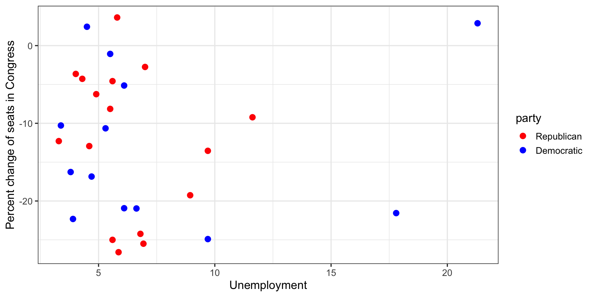
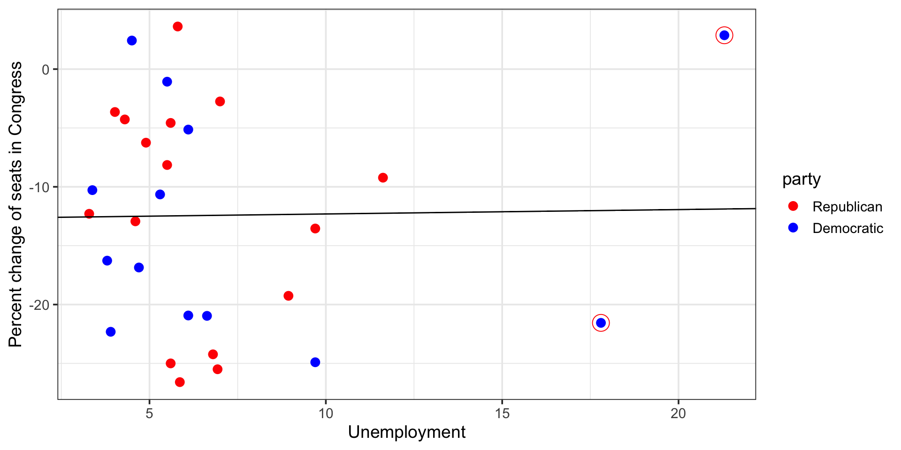
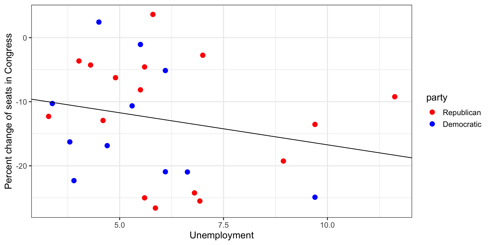
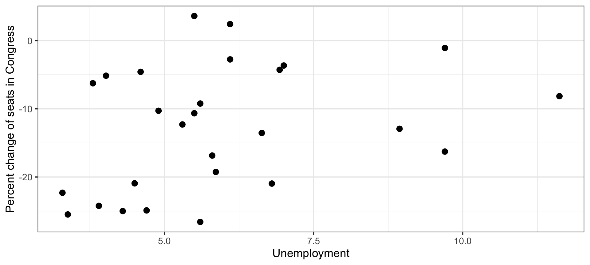
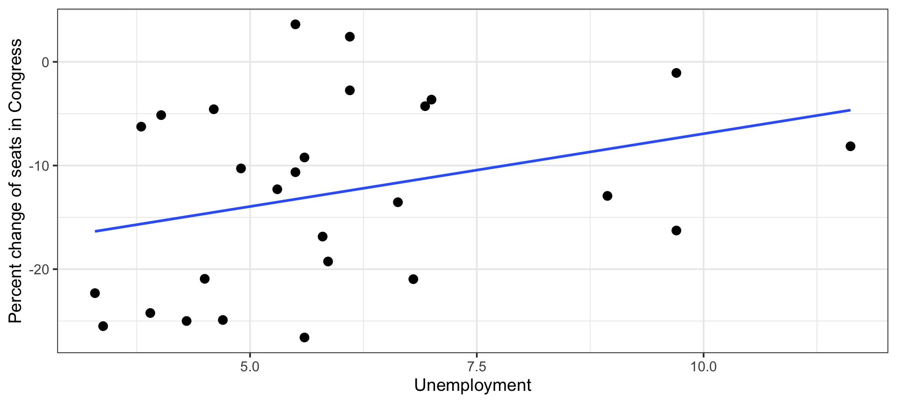
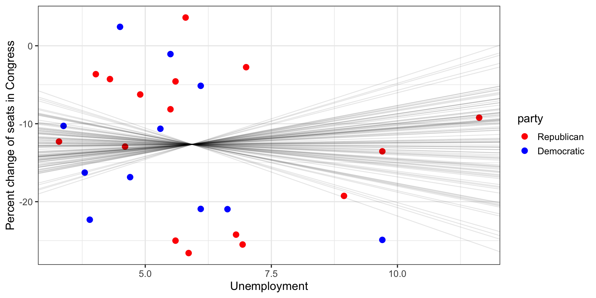
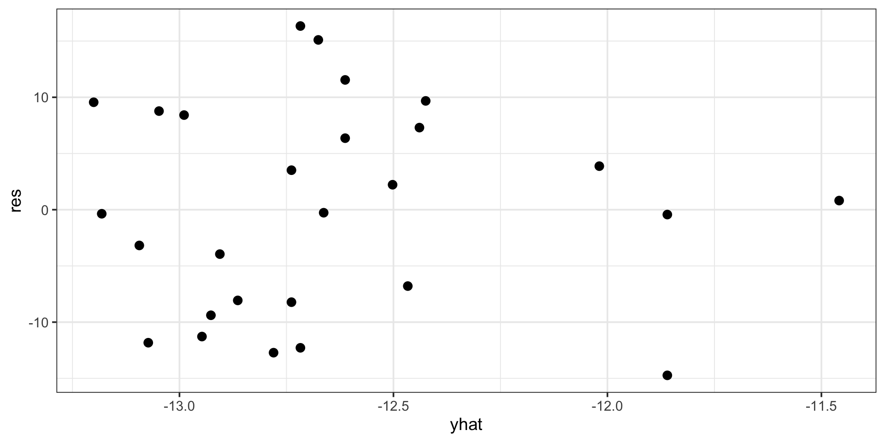
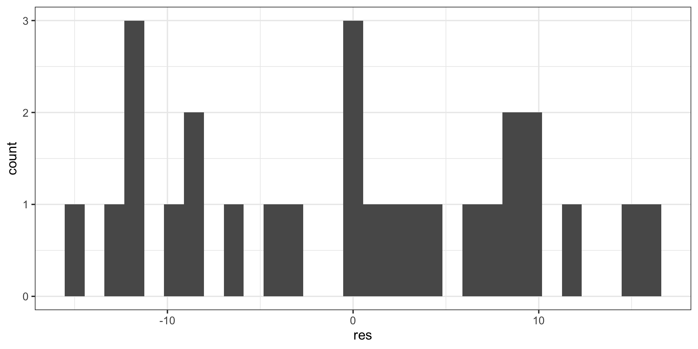

03:00
Inference for Regression
STAT 20 UC Berkeley
Some chatter from the internets
(Take out a piece of paper / pencil or tablet)
2016 Election

Question at hand: How will Obama’s 46% approval rating effect his party’s candidate for the 2016 presidential election?

- Sketch the data frame that Harry is talking about.
- Sketch a plot of the trend he is describing.
You will have 2 minutes to work solo/silently, then 1 minute to discuss.

Why is it ridiculous?
Inference for Regression
We can fit a line through any cloud of points that we please, but if we just have a sample of data, any trend we detect doesn’t necessarily demonstrate that the trend exists in the population at large.
Plato’s Allegory of the Cave

Statistical Inference
Goal: use statistics calculated from data to makes inferences about the nature of parameters.
In regression,
- parameters: \(\beta_0\), \(\beta_1\)
- statistics: \(b_0\), \(b_1\)
Classical tools of inference:
- Confidence Intervals
- Hypothesis Tests
Unemployment and elections
# A tibble: 29 × 5
year potus party unemp change
<dbl> <chr> <fct> <dbl> <dbl>
1 1899 William McKinley Republican 11.6 -9.22
2 1903 Theodore Roosevelt Republican 4.3 -4.28
3 1907 Theodore Roosevelt Republican 3.29 -12.3
4 1911 William Howard Taft Republican 5.86 -26.6
5 1915 Woodrow Wilson Democratic 6.63 -21.0
6 1919 Woodrow Wilson Democratic 3.38 -10.3
7 1923 Calvin Coolidge Republican 6.93 -25.5
8 1927 Calvin Coolidge Republican 4.02 -3.64
9 1931 Herbert Clark Hoover Republican 8.94 -19.3
10 1935 Franklin Delano Roosevelt Democratic 21.3 2.88
# … with 19 more rowsUnemployment and elections, cont.

Reigning theory: voters will punish candidates from the Presidents party at the ballot box when unemployment is high.
Unemployment and elections, cont.

Reigning theory: voters will punish candidates from the Presidents party at the ballot box when unemployment is high.
Unemployment and elections, cont.
Reigning theory: voters will punish candidates from the Presidents party at the ballot box when unemployment is high.
Unemployment and elections, cont.

Focusing only on non-Great Depression elections, some evidence of a negative linear relationship between unemployment level and change in party support.
Or is there?
H-test for Regression
\(H_0:\) There is no relationship between unemployment level and change in party support (or: change in party support is independent of unemployment).
\(H_0: \beta_1 = 0\)
Method
If there is no relationship, the pairing between \(X\) and \(Y\) is artificial and we can permute:
- Generate synthetic data sets under \(H_0\) by shuffling \(X\).
- Compute a new regression line for each data set and store each \(b_1\).
- See where your observed \(b_1\) falls in the distribution of \(b_1\)’s under \(H_0\).
Your turn
Take a moment to sketch out the infer pipeline that will results in a collection of 500 slopes that would might see in a world where the null hypothesis was true.
Turn to a neighbor and discuss your pipeline. I will ask for a pair to share.
# A tibble: 27 × 5
year potus party unemp change
<dbl> <chr> <fct> <dbl> <dbl>
1 1899 William McKinley Republican 11.6 -9.22
2 1903 Theodore Roosevelt Republican 4.3 -4.28
3 1907 Theodore Roosevelt Republican 3.29 -12.3
4 1911 William Howard Taft Republican 5.86 -26.6
5 1915 Woodrow Wilson Democratic 6.63 -21.0
6 1919 Woodrow Wilson Democratic 3.38 -10.3
7 1923 Calvin Coolidge Republican 6.93 -25.5
8 1927 Calvin Coolidge Republican 4.02 -3.64
9 1931 Herbert Clark Hoover Republican 8.94 -19.3
10 1943 Franklin Delano Roosevelt Democratic 4.7 -16.9
# … with 17 more rows03:00
Take a moment to sketch out the infer pipeline that will results in a collection of 500 slopes that would might see in a world where the null hypothesis was true.
First shuffle
First shuffle
Response: change (numeric)
Explanatory: unemp (numeric)
Null Hypothesis: independence
# A tibble: 27 × 3
# Groups: replicate [1]
change unemp replicate
<dbl> <dbl> <int>
1 -16.9 11.6 1
2 -25 4.3 1
3 -24.2 3.29 1
4 -8.14 5.86 1
5 -10.6 6.63 1
6 -24.9 3.38 1
7 -4.57 6.93 1
8 -5.14 4.02 1
9 -26.6 8.94 1
10 -16.3 4.7 1
# … with 17 more rowsSecond shuffle
library(infer)
ump %>%
specify(change ~ unemp) %>%
hypothesize(null = "independence") %>%
generate(1, type = "permute")Response: change (numeric)
Explanatory: unemp (numeric)
Null Hypothesis: independence
# A tibble: 27 × 3
# Groups: replicate [1]
change unemp replicate
<dbl> <dbl> <int>
1 -16.9 11.6 1
2 -25 4.3 1
3 -24.2 3.29 1
4 -8.14 5.86 1
5 -10.6 6.63 1
6 -24.9 3.38 1
7 -4.57 6.93 1
8 -5.14 4.02 1
9 -26.6 8.94 1
10 -16.3 4.7 1
# … with 17 more rowsshuffle2 <- ump %>%
specify(change ~ unemp) %>%
hypothesize(null = "independence") %>%
generate(1, type = "permute")
shuffle2Response: change (numeric)
Explanatory: unemp (numeric)
Null Hypothesis: independence
# A tibble: 27 × 3
# Groups: replicate [1]
change unemp replicate
<dbl> <dbl> <int>
1 -8.14 11.6 1
2 -25 4.3 1
3 -22.3 3.29 1
4 -19.3 5.86 1
5 -13.5 6.63 1
6 -25.5 3.38 1
7 -4.28 6.93 1
8 -5.14 4.02 1
9 -12.9 8.94 1
10 -24.9 4.7 1
# … with 17 more rowsSecond shuffle, visualized

Second shuffle, visualized

Third shuffle, visualized
Fourth shuffle, visualized
Visualize 15 permuted \(b_1\)’s
Generate 500 permuted \(b_1\)’s
Response: change (numeric)
Explanatory: unemp (numeric)
Null Hypothesis: independence
# A tibble: 500 × 2
replicate stat
<int> <dbl>
1 1 0.827
2 2 0.0721
3 3 0.298
4 4 1.27
5 5 0.701
6 6 1.80
7 7 -0.770
8 8 -0.955
9 9 -1.14
10 10 1.04
# … with 490 more rowsVisualize 500 permuted \(b_1\)’s

Null dist. of \(b_1\)

Reigning theory: voters will punish candidates from the Presidents party at the ballot box when unemployment is high.
Null dist. of \(b_1\), cont.
# A tibble: 1 × 1
p_value
<dbl>
1 0.264H-tests for regression
Call:
lm(formula = change ~ unemp, data = ump)
Residuals:
Min 1Q Median 3Q Max
-14.0105 -7.8606 -0.1827 7.3890 16.1400
Coefficients:
Estimate Std. Error t value Pr(>|t|)
(Intercept) -6.7142 5.4567 -1.230 0.230
unemp -1.0010 0.8717 -1.148 0.262
Residual standard error: 9.106 on 25 degrees of freedom
Multiple R-squared: 0.05011, Adjusted R-squared: 0.01211
F-statistic: 1.319 on 1 and 25 DF, p-value: 0.2617H-tests for regression
- Each line in the summary table is a hypothesis test that the parameter is zero.
- The summary table from
lm()will always report p-values associated with a t test, regardless of if it’s appropriate. 😬 - Under certain conditions, the test statistic associated with \(b\)’s is distributed like \(t\) random variables with \(n - p\) degrees of freedom.
\[ \frac{b - \beta}{SE} \sim t_{df = n - p}\]
Conditions for using the \(t\) distribution for \(b_1\)
- Linearity: linear trend between \(X\) and \(Y\), check with residual plot.
- Independent errors: check with residual plot for serial correlation.
- Errors with constant variance: look for constant spread in residual plot.
- Normally distributed errors: look at histogram of residuals.
Residuals vs \(\hat{y}\)

- Possible non-linear trend
- No sign of serial correlation
- No sign of non-constant variance
Distribution of residuals

- Possibly not normal
So why were the p-values similar?
H-tests for regression
- At small sample sizes, p-values and CIs based on the t-distribution require normal errors to be perfectly accurate, but are quite robust to violations of that assumption.
- At large sample sizes the normality assumption becomes less important as the Central Limit Theorem takes over (the \(t\) converges to the standard normal at large \(n\)).
- Permutation and bootstrap methods are always an option but they also require reasonable sample sizes to be accurate.